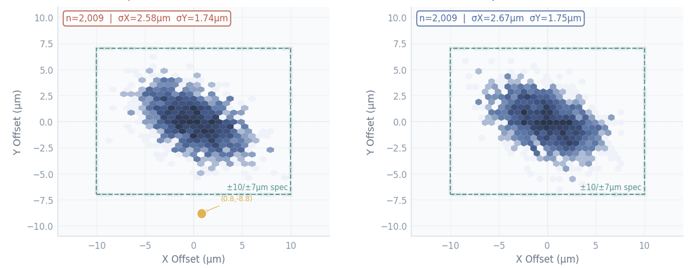
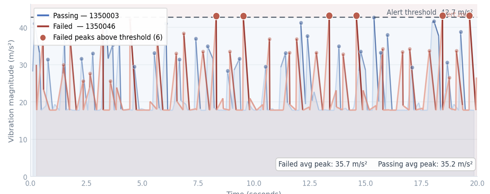

A single vibration sensor on an ASM AD210 Plus die bonding machine's LM guide detected 85% of confirmed pick-and-place failures — validated with leave-one-out cross-validation across 105 wafer runs.
A high-throughput die bonding platform used in advanced semiconductor packaging, placing individual dies at speeds exceeding 10,000 units per hour. The LM (Linear Motion) guide governs the precise movement of the bond head — degradation here directly affects placement accuracy and increases the probability of failed picks.
Failed picks are normally caught only at end-of-batch inspection — by then the wafer is committed and the root cause has cooled. Silent calibration drift is worse: one wafer drifted to +31.8 μm in X over 8 consecutive placements with no sentinel triggered at all.
Wiser's sensor mounts directly on the LM guide rail, capturing tri-axial acceleration once per pick-and-place cycle. The pipeline computes vibration energy, cycle timing, and frequency-domain features in real time — no human intervention required.
Failed runs show a mean tail-energy difference of +0.071 m/s² (p=0.024, Cohen's d=0.66) against clean runs — a real, statistically significant signal, not noise.


The two undetected failures were vacuum or vision faults — invisible to a vibration sensor by design. The 38% false-alarm rate is a consequence of the 3.35 Hz sampling bandwidth; a 10 kHz accelerometer on the same mount would unlock bearing and resonance frequencies and is expected to push AUC above 0.95.